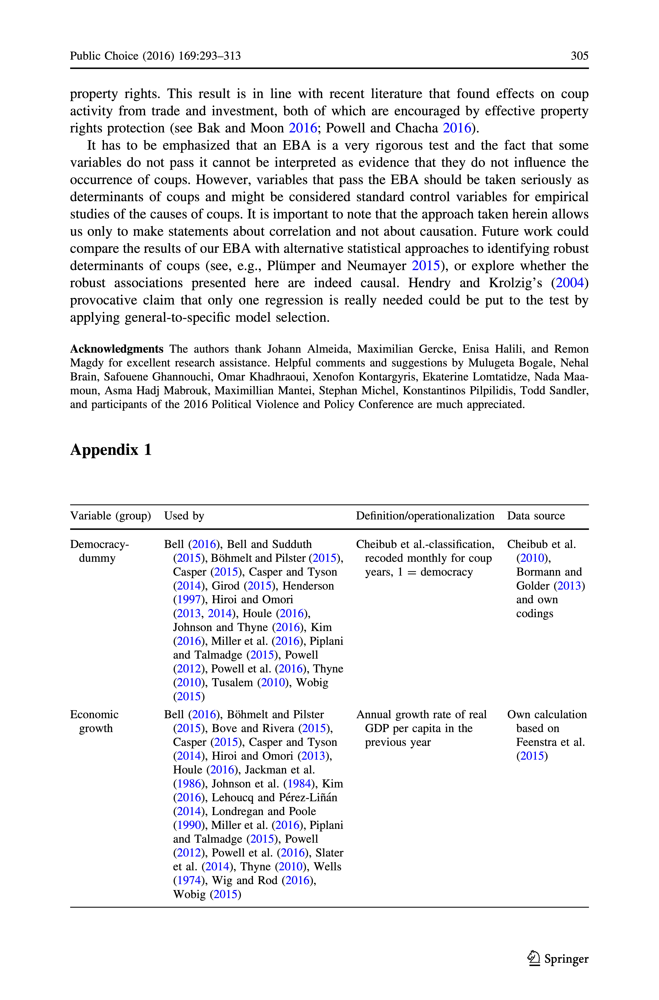
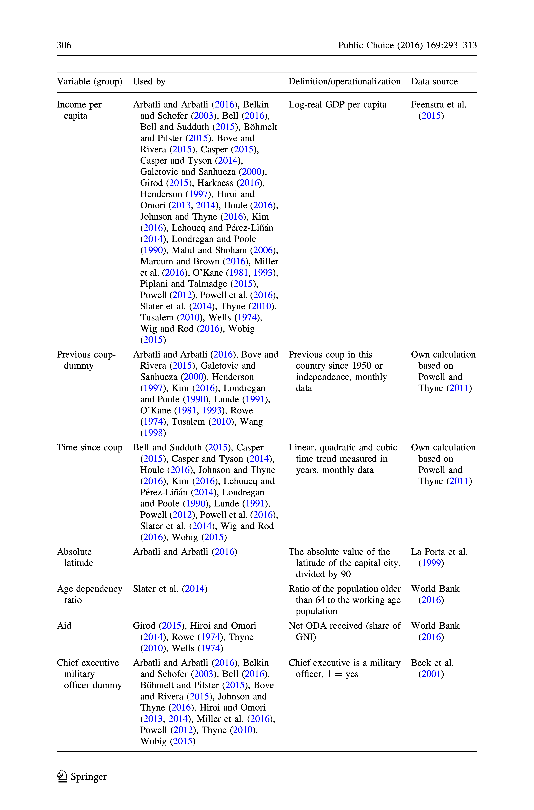
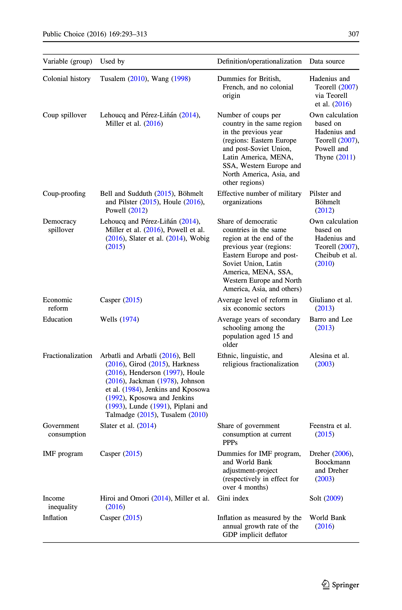
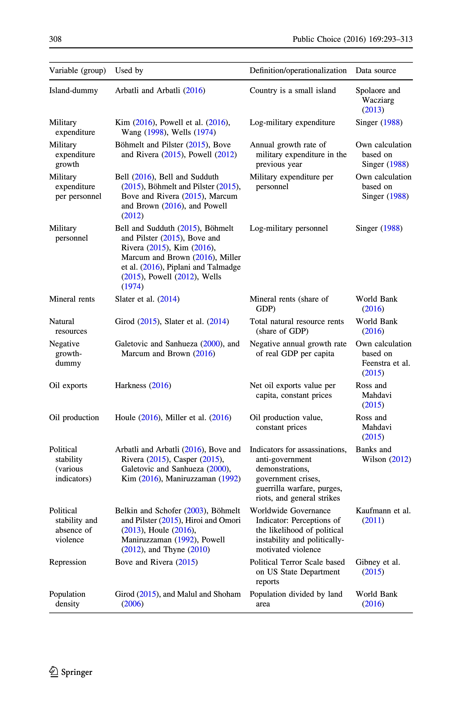
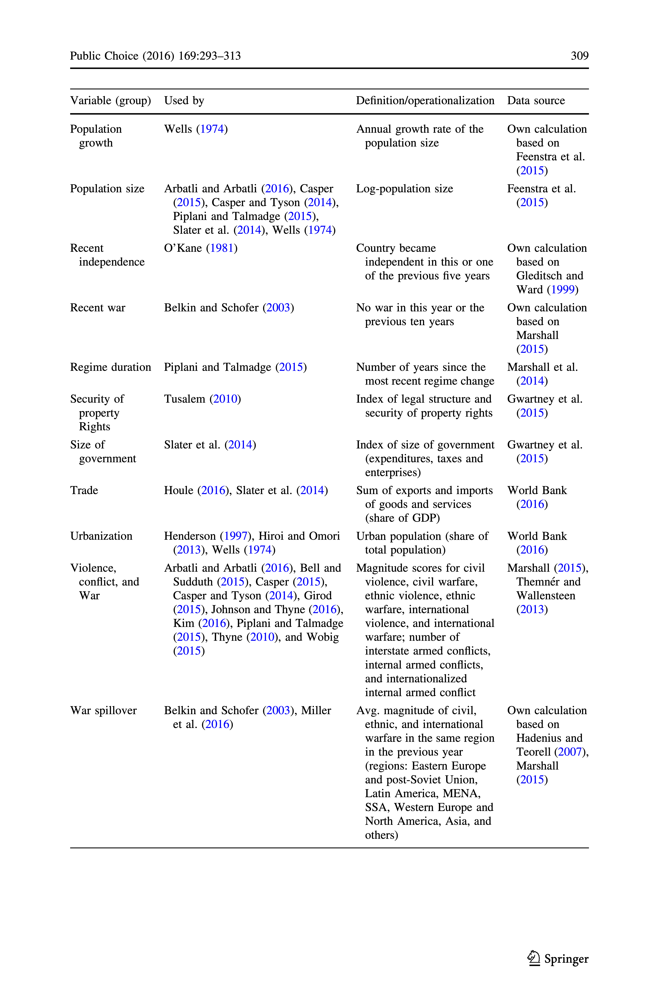

2024-05-27
About one hundred potential determinants of coups have been proposed, but no consensus has emerged on an established baseline model for analysing coups.
When to expect a coup d’e ́tat? An extreme bounds analysis of coup determinants (Gassebner, Gutmann, and Voigt 2016, 293)

All the variables used in previous studies focus on pre-coup conditions, with no consideration given to post-coup factors.
\[ \begin{aligned} E(U) = p \times B + (1 - p) \times (-C) \end{aligned} \]
\[ \begin{aligned} p \times B > (1 - p) \times C \end{aligned} \]
\[ \begin{aligned} p > (1-p) \end{aligned} \]
| Country | Coup Attempted | Coup Succeeded | Success Rate |
|---|---|---|---|
| Bolivia | 23 | 11 | 47.8% |
| Argentina | 20 | 7 | 35.0% |
| Sudan | 17 | 6 | 35.3% |
| Haiti | 13 | 9 | 69.2% |
| Venezuela | 13 | 0 | 0.0% |
| Iraq | 12 | 4 | 33.3% |
| Syria | 12 | 8 | 66.7% |
| Thailand | 12 | 8 | 66.7% |
| Ecuador | 11 | 5 | 45.5% |
| Burundi | 11 | 5 | 45.5% |
| Guatemala | 10 | 5 | 50.0% |
| Total | 491 | 245 | 49.9% |
Source: GIC dataset |
|||
Table 1 presents the top 10 countries with the highest number of coup attempts, along with their respective success rates. Notably, the data indicates that the average success rate of these coup attempts is approximately 50%.
If we focus on the success rate, we might identify the determinants really impact coup attempts and avoid dwelling on less relevant factors.
So, what could most significantly influence the success rate of coups? The answer lies in the balance of power within the ruling elites.
What determines this balance of power? The types of regimes.
According to Geddes, Wright, and Frantz (2014) (GWF), autocratic regimes can be categorized into three broad types based on leadership origins and decision-making factors:
Military Regimes: A group of military officers controls the regime’s power structure, including leadership selection and policy formulation.
Personalist Regimes: Absolute power rests with a single dictator.
Dominant-Party Regimes: Supreme power resides within the ruling party, with the leader acting as its representative and subject to its collective leadership.
| Regime Type | Country Year | Share | Num of Coups | Percent of Coups | Coup Likelihood |
|---|---|---|---|---|---|
| Democracy | 5303 | 46.7% | 122 | 24.8% | 2.3% |
| Dominant-Party | 2569 | 22.6% | 82 | 16.7% | 3.2% |
| Personal | 1477 | 13.0% | 113 | 23.0% | 7.7% |
| Monarchy | 1056 | 9.3% | 25 | 5.1% | 2.4% |
| Military | 638 | 5.6% | 110 | 22.4% | 17.2% |
| Other | 322 | 2.8% | 39 | 7.9% | 12.1% |
| Total | 11365 | 100.0% | 491 | 100.0% | 4.3% |
Source: REIGN and GIC Datasets |
|||||
Table 2 presents the distribution of regime types and their likelihood of experiencing coups. It is noticeable that military regimes have the highest likelihood of coups, followed by personalist regimes, with the exception of the “Other” category.
H1: The primary determinant of a coup attempt is the perceived chance of success. Coup plotters likely require a success threshold of at least 50%.
H2: Due to their balance of power dynamics, military regimes are more prone to coups, followed by personalist regimes, while dominant-party regimes are the least likely to experience coups among the three.
probit with sample selection model| Regime Type | Country Year | Share | Num of Coups | Percent of Coups | Success Rate |
|---|---|---|---|---|---|
| Democracy | 5303 | 46.7% | 122 | 24.8% | 51.6% |
| Dominant-Party | 2569 | 22.6% | 82 | 16.7% | 53.7% |
| Personal | 1477 | 13.0% | 113 | 23.0% | 44.2% |
| Monarchy | 1056 | 9.3% | 25 | 5.1% | 56.0% |
| Military | 638 | 5.6% | 110 | 22.4% | 48.2% |
| Other | 322 | 2.8% | 39 | 7.9% | 53.8% |
| Total | 11365 | 100.0% | 491 | 100.0% | 49.9% |
Source: REIGN and GIC Datasets |
|||||
Comments and suggestions are welcome and appreciated!